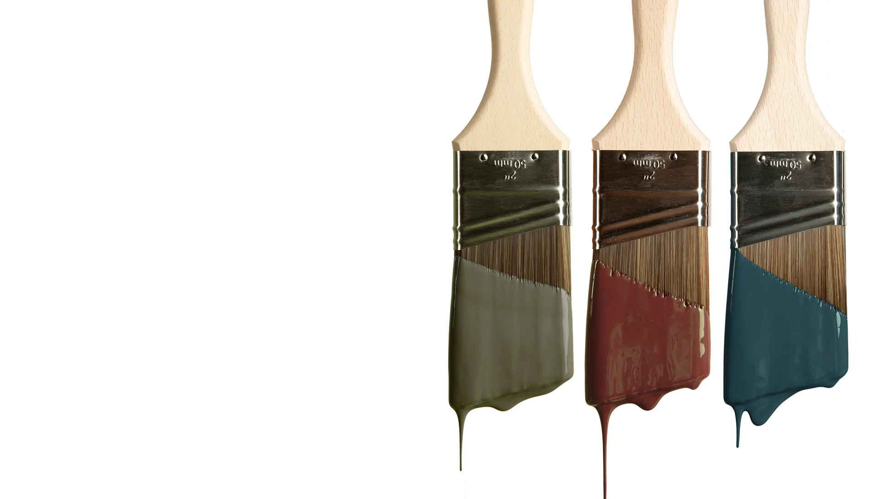
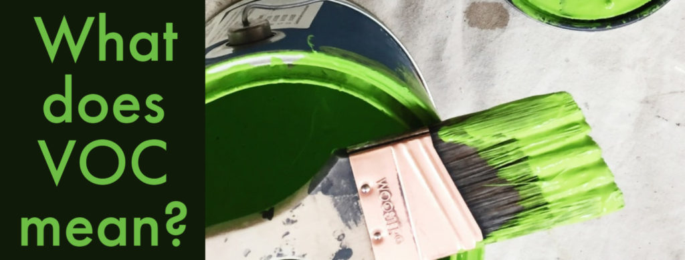

We make paint shopping simple with designer-curated colors, peel and stick paint swatches, premium zero VOC paint and quality painting supplies, delivered.
Fall color drop!
Three moody hues perfect for fall and beyond

Zero VOC paint
Our water-based interior paints and colorants are zero VOC which means they are formulated without the toxic carbon-based solvents found in other paints. VOCs are emitted as gasses and can pollute the environment and the air inside your home, posing health risks. According to the EPA, the air inside can be up to ten times more polluted than the air outdoors, so we made it our priority to create products that support healthier indoor air, while still delivering outstanding performance. According to the EPA, air inside our homes can be up to ten times more polluted than the air outside, which is why it is more important than ever to minimize the use of products made with high polluting chemicals and focus on ones that support healthier indoor air environments. That includes paint. If you are searching for a better paint for your home, choosing a VOC-free paint is a great first step.
Why You Should Only Use Zero VOC Paint, learn more on
https://www.allbrightpainting.com/blog/2022/july/why-we-use-zero-voc-paints-and-you-should-too-/
